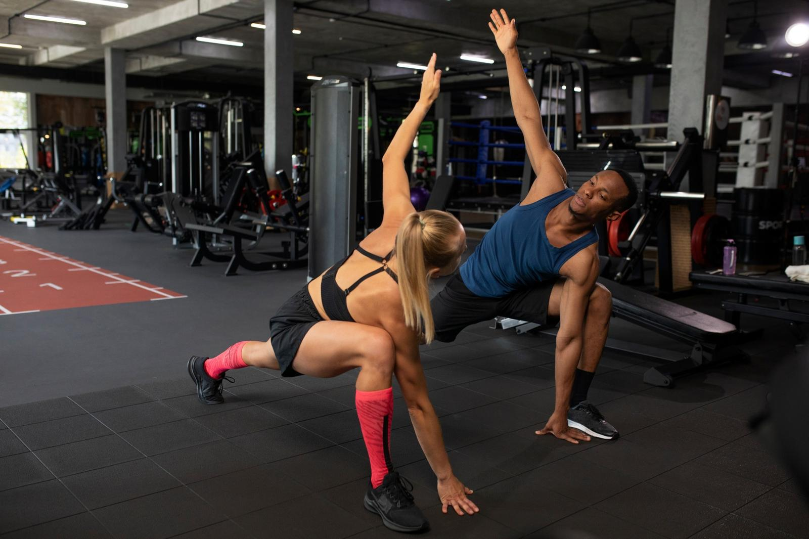

6/8
Domanda 6
di 8
Qual è il momento in cui il tuo piano salta più spesso?
A
Il giorno in cui cambia il turno
B
La sera in cui esco più tardi del previsto
C
I giorni in cui dormo fuori casa
D
Nessuno in particolare:
non salta di colpo, si consuma un pezzo alla volta
Scegli quella più vicina alla tua settimana
Tasti A B C D
Domanda 6 di 8